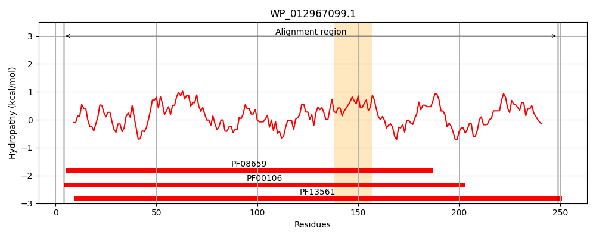
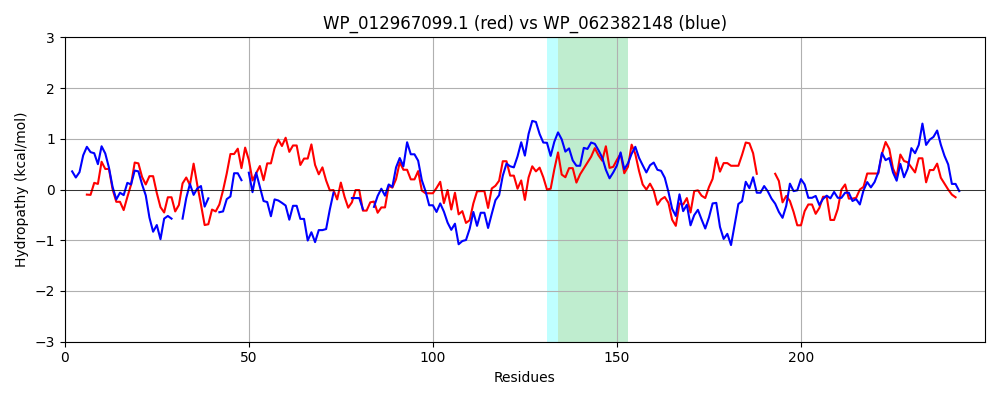

Hit Accession: WP_062382148
Hit TCID: 1.A.115.1.5
Hit Description: gnl|BL_ORD_ID|21287 gnl|TC-DB|WP_062382148.1|1.A.115.1.5 SDR family oxidoreductase [Pseudomonas abietaniphila]
Mach Len: 250
e:0.000000
Query TMS Count : 1
Hit TMS Count: 1
TMS-Overlap Score: 0.450000
Predicted Substrates:None
BLAST Alignment:
Score: 275 , Bit scores: 110 bits, E-value: 2.2e-29, Alignment length: 250, Percentage identity: 31
Query: 4 RIALVTGGSRGLGKNAALKLAAKGTDILLTYHSNRQAALDVVAEIEQKGVKAAALALNVGDISSFDAFASEVAQVLAQKWGRTTFDYLLNNAGIGLNVPFAETSEAQFDELMNIQFKGPFFLTQRLLPLLQDGGRILNVSSGLARFALPGYAAYAAMKGAMEVLTRYQAKELGGRGISVNIIAPGAIET----DFGGGVVRDNAEVNRHIAAQTALGRVGLPDDIGDAIAALLSDELAWMNAQRVEVSGG 249
+IALVTGG+ G+G A + A +G + +T RQA LD A + + G A + ++ ++ DA ++ + GR D L NAG G +P + +EAQ+ + + KG F Q+ LPLL G ++ S ++ YAA K A+ R +L R + VN ++PGA T D G + ++A+Q +GRVG P++I A L SD+ +++N + V GG
Sbjct: 8 KIALVTGGTTGIGLATAKRFAEEGAYVYIT--GRRQAELD--AAVARVG-NATGVQVDSTNLEQLDALYRQIGT----EKGR--LDVLFANAGGGSMLPLGDITEAQYQDTFDRNVKGVLFTVQKALPLLAKGASVILTGSTAGSSGTAAFSVYAASKAAVRAFARNWILDLKDRNVRVNTLSPGATRTPGLVDLAGPDAAQQQGLLDYLASQIPMGRVGEPEEIAAAALFLASDDASFVNGIELFVDGG 246 | Protein Hydropathy Plots: |
|---|
|  |  |
Pairwise Alignment-Hydropathy Plot:
|
|---|
|  |